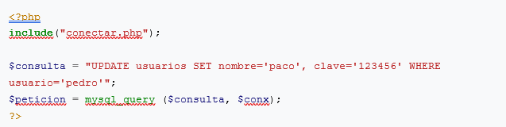

En este apartado solo nos vamos a centrar en el uso de php con mysql, ya que sql es un lenguaje en particular, y muy generalizado. Normalmente, para la administración de bases de datos mysql, se usa PhpMyAdmin, una interfaz muy amigable con la que manejar las db. Así que comencemos.
Conexion
Lo primero que se debe realizar siempre, es la conexión de php con mysql. Para conectar con una base de datos, se usa la función mysql_connect(), donde deberemos indicar el servidor, el usuario y la clave.
Aquí un ejemplo:
En las variables dbhost, dbuser, y dbpass, definimos el servidor, el usuario y la clave de nuestro servidor mysql. Y en la variable $conx, creamos la variable de conexión. A continuación, tenemos que seleccionar, dentro del servidor, la base de datos que queremos usar:
Aquí un ejemplo:
Primera Consulta
Bien, llegados a este punto vamos a crear nuestra primera consulta. Vamos a contar con que el código de conexión y de selección de la DB lo tenemos escrito en el archivo conectar.php, y para ahorrarnos unas líneas, vamos a incluirlo en vez de reescribirlo.
Para hacer una consulta, se usa la siguiente sintaxis: $sentencia = "SELECT [columna1, columna2] FROM nombre_tabla"; y después se ejecuta la consulta. Por último, se almacenan los datos en un array con la función mysql_fetch_array($nombredelapeticion).
Aquí un ejemplo:
El código anterior nos mostraría todos los usuarios y sus claves de la tabla usuarios.
Nota:
Si en vez de usuario y apellidos, que es seleccionar determinadas columnas de la tabla, usamos un asterisco (*), se seleccionarían todas las columnas de la tabla.
Bien, con eso lo que hemos hecho es seleccionar todos los registros existentes; pero, ¿y si queremos, usando el ejemplo anterior, la clave de determinado usuario? Para ello usaríamos WHERE.
Aquí un ejemplo:
La idea es simple. En pseudocódigo sería algo como: Selecciona todos los datos del usuario pedro de la tabla usuarios. Se pueden ir añadiendo "filtros" como queramos:
...WHERE usuario='pedro' AND nombre='pedro picapiedra'...
Nota:
Importante recordar usar siempre comillas simples al asignar valores. Es decir, es así: ...usuario='pedro'... no así: ...usuario="pedro".
Nota2: Para usar variables se usa igual: ...usuario='$miusuario'...
Y por último, hay más añadidos a la sentencia como ORDER BY nombre ASC (donde ordena alfabéticamente por el nombre en ASCendente) o LIMIT 0,30 la cual nos dará los resultados del registro 0 al 30 únicamente.
También podemos obtener en número de registros obtenidos con la función mysql_num_rows($nombredelapeticion). Que nos devolveria, por ejemplo: 5, si tenemos 5 registros en nuestra tabla.
Insertar Datos:
Para insertar datos, basta con indicar que columnas se van a insertar, y luego asignarle los valores a esas columnas. La sintaxis es:
$consulta = "INSERT INTO [nombre_tabla] ([columna1], [columna2],...,[columnaN]) VALUES ('$var1', '$var2',..., '$varN')";
Aquí un ejemplo (sin usar variables, son con texto):
Actualizar Datos:
Para actualizar, basta con indicar que columna se quiere cambiar, por el qué se quiere cambiar, y a quien se quiere cambiar. la sintaxis sería:
$consulta = "UPDATE [nombre_tabla] SET [columna1]='$valor1', [columna2]='$valor2' WHERE [columna3]='$valor3'";
Aquí un ejemplo (sin usar variables, son con texto):

Borrar Datos
Para borrar datos, basta con indicar a quien se quiere borrar o el que. La sintaxis sería:
$consulta = "DELETE [nombre_tabla] WHERE [columna1]='$valor1'";
Aquí un ejemplo (sin usar variables, son con texto):